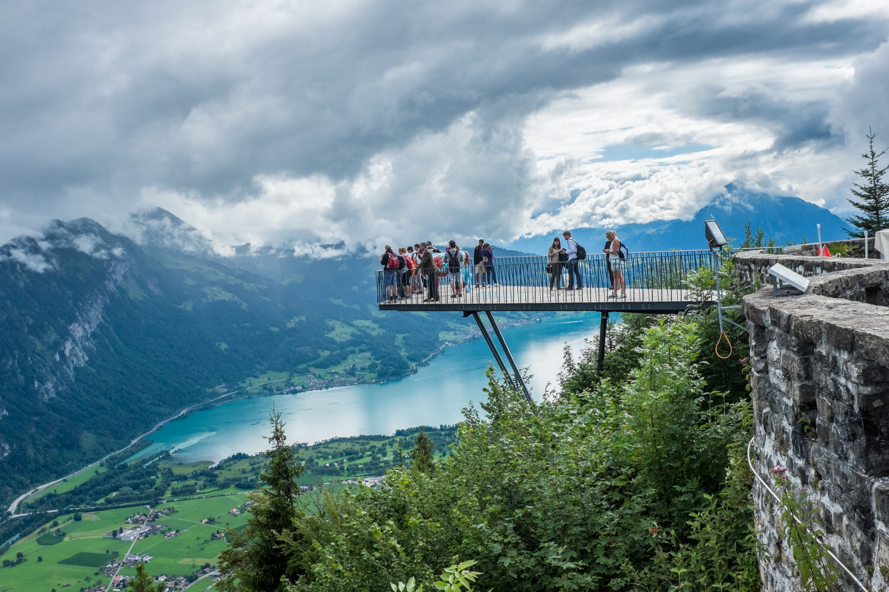
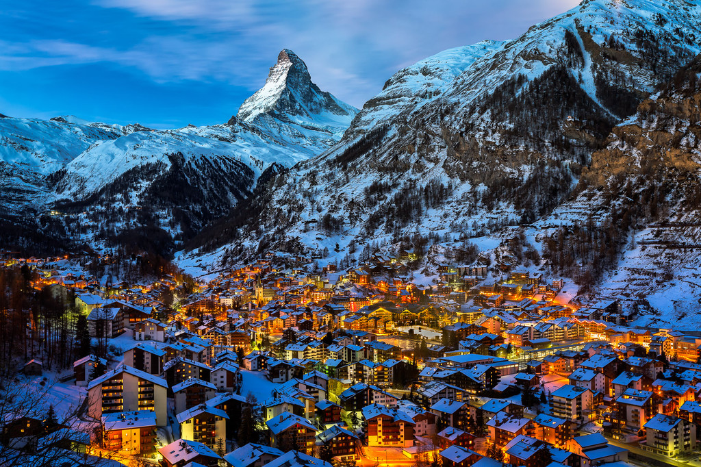

Copyright © 2018 , The Great Nature
All Rights Reserved
Developed & Maintained by Sithi Aslinah
This the world fully located with nature. Nature is the human need because without it any species in the world cant survive. Every species also consider us a nature.
 | Swis | German |
|---|
The world is created with 70% of water and 30% of land. Ocean is more widsphere compare with land. There is a marine specieces live in the ocean. Most mammals made a land as their habitual.There is fertalization which all species in the world where link in block chains.
| Forest | Water fall |
|---|
The world is created with 70% of water and 30% of land. Ocean is more widsphere compare with land. There is a marine specieces live in the ocean. Most mammals made a land as their habitual.There is fertalization which all species in the world where link in block chains.


| Blue Ocean | Plant Land | Colourful Flower | Cute Mammals |
|---|
The world is created with 70% of water and 30% of land. Ocean is more widsphere compare with land. There is a marine specieces live in the ocean. Most mammals made a land as their habitual.There is fertalization which all species in the world where link in block chains.


| Orange forest | Flower lake | Sun set | Italian Lake |
|---|
The world is created with 70% of water and 30% of land. Ocean is more widsphere compare with land. There is a marine specieces live in the ocean. Most mammals made a land as their habitual.There is fertalization which all species in the world where link in block chains.

| Orange forest | Flower lake | Sun set | Italian Lake |
|---|